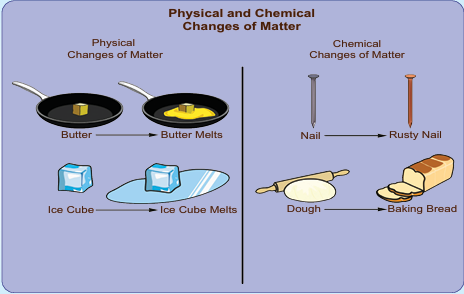
Description for the above picture physical and chemical changes of matter begins,
picture 1 physical changes of matter, piece of butter on a pan melts on heating ice cube melts.
Picture 2 chemical changes of matter, nail and a rusty nail, dough and baking bread. Description ends.
To state the effect of heat on solid, liquid and gas and the associated changes in the arrangement of particles upon heating
To differentiate physical change and chemical change on the basis of particle theory
To involve in experiments crystallizing copper sulphate, melting ice, freezing water, sublimating camphor.
To identify the process as a physical change or chemical change based on its characteristics
To clarify the process of rusting, burning of paper, curdling of milk, reaction of baking soda with lemon juice
To distinguish periodic and non periodic changes
To experience the endothermic and exothermic changes through simple activities.
Changes take place around us all the time. A change refers to an alteration in physical properties or alteration in the composition of matter. For example, ice melts on heating, that is, it changes from a solid to liquid. On further heating, water starts evaporating, it changes from a liquid to gas. Here, there is a change in the physical state of the substance. Let us look at another change, that is, when objects made of iron are exposed to moist conditions, a reddish brown new substance called rust forms on the surface of these objects. In this instance of rusting, there is change in the composition of the substance. Thus, the change involves an alteration in the properties such as colour, texture and the state of the substance since there is formation of a new substance.
Let us go for another set of example. Heat a cup of water and a paper. The water upon heating become just hotter and hotter and at some point will become water vapour. It remains water at all times; that is, water remains the same, only its volume changes and hence it is called as physical change. Whereas in case of burning of paper, changes to carbon dioxide and other substances. Now we cannot get back the paper after burning. As there is a change in the chemical nature, it is called as chemical change.
When you mix sugar in water, is it a chemical change or physical change?
Look at the following list. Identify the physical and chemical changes and fill in the given table.
(rusting of iron, digestion of food, boiling egg, rotting banana, mixing sand and water, chopping wood, crushing a can, mixtures of different coloured buttons, burning of wood)
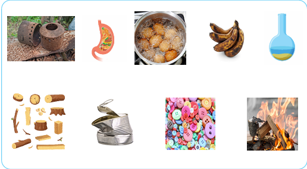
physical and chemical changes Table begins
Physical Change |
Chemical Changes |
|
|
|
|
|
|
|
|
|
|
Table ends.
In class six, we read that matter is classified as solid, liquid and gas based on the physical state. We know that matter is made up of tiny particles, atoms and molecules, particles are in constant and random movement. Let us have a look at the summary of the characteristics of solid, liquid and gas.
When the arrangement of the particles in a substance change for any reason (applying pressure, altering temperature and other different reasons) the physical state of the substance gets changed.
Let us see what happens when we apply heat to the substances.
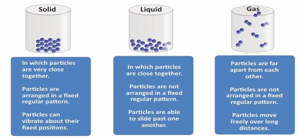
Description for the above picture begins,
Picture 1. solid, In which particles are very close together, Particles are arranged in a fixed regular pattern, Particles can vibrate about their fixed positions.
Picture 2, Liquid, In which particles are close together. Particles are not arranged in a fixed regular pattern. Particles are able to slide past one another.
Picture 3, Gas, Particles are far apart from each other. Particles are not arranged in a fixed regular pattern. Particles move freely over long distances. Description ends.
Upon heating, particle arrangement within the state of matter gets disturbed. The disturbance is seen either as expansion or contraction. When heated or cooled, the object may expand or contract, but the mass remains the same. That is, the number of particles that was inside the object does not undergo any change, only the arrangement of the particle changes. When a glass of water is heated, its volume increases and if a glass of water is cooled its volume decreases.
Such changes where there is change in volume but mass remaining the same are called physical changes and they can be pictorially depicted as follows,
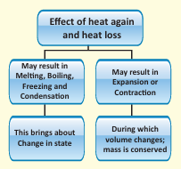
Description for the flow chart begins, effect of heat gain and heat loss may result in, melting, boiling, freezing and condensation. This brings about change in state. May result in expansion or contraction, during which volume changes, mass is conserved. Description ends.
There are other possibilities that can occur upon heating the solids, liquids and gases. The possible changes are due to melting, boiling, freezing and condensation during which there is change in the physical state of the particles of the matter. Let us discuss about them in detail in a short while.
Let us now see some physical changes and the underlying reasons as why they are simply physical changes.
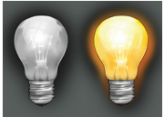
Physical changes are the changes in which only physical properties of a substance undergo a change and there is no change in its chemical composition. There is no new substance formed in a physical change. Physical properties include lustre, malleability (flexibility), and ductility (ability to be drawn into a thin wire), density, viscosity, solubility, mass, volume and so on. Any change in these physical properties is referred to as a physical change. For example, when a rubber band is stretched, it elongates. However, when then stretching is stopped, the rubber band comes back to its original state and shape. In this example, there is no new substance formed but the rubber band remains the same before and after elongation.
A physical change has following characteristics
During a physical change, no new substances are formed. In a physical change, the chemical properties of a substance do not change. For example, when ice cube melts, water is formed. In this change, there is no new substance, but water is same both in ice and in water.
A physical change is usually temporary and reversible in nature. For example, when water is heated, water vapours are formed, once water vapours are cooled, water can be obtained again.
In a physical change, the chemical properties of a substance do not change. For example, when a piece of gold is melted, its chemical composition remains the same in the solid form and also in the liquid form.
In a physical change, the physical properties such as colour, shape and size of a substance may undergo a change . For example, cutting of vegetables and inflating a balloon are some examples of physical changes in which size and shape of a substance undergoes a change. we know it is not.
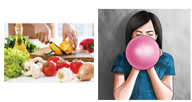
Change of state of a substance is one of the major physical changes we encounter in daily lives. We have read about simple changes of physical state such as melting of ice in our previous classes.
The following are some of the changes of state
from Solid to Liquid is Melting
from Liquid to Gas is Vaporization
from Liquid to Solid is Freezing
from Gas to Liquid is Condensation
from Solid to Gas is Sublimation
Melting, vaporization, and sublimation occur when heated and hence it is called as endothermic process. In an endothermic process, the speed of the molecules is increased hence they move faster.
In contrast, such as in freezing and condensation, heat is removed, resulting in the decreasing the speed of the molecules causing them move slower. Such processes are called as exothermic process.
In the next section we will look at each of these physical changes.
You have seen a puddle of water getting pooled around the glass of ice cream or a glass of ice cubes when it is kept in room temperature. The ice cubes or ice cream melt. Right, Can you give reason for that? The ice kept in the beaker receives heat from the surrounding air, to melt and form water.
ACTIVITY 1 begins,
Melting of ice and freezing of water.
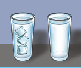
Though ice and water look different, they are both made of water molecules. This means that no new substance is formed during the melting of ice, only a change of state from solid to liquid takes place during the melting of ice. So, the melting of ice to form water is a physical change.
The change which occurs during the melting of ice to form water can be reversed easily by freezing the water to form ice again by keeping a beaker of water in the freezer zone of a refrigerator.
Thus we can find that
Solid on heating converted to Liquid
Liquid on cooling converted to Solid.
Melting is the changing of a solid into its liquid state and it happens by heating, whereas Freezing is the changing of a liquid into its solid state and it happens by cooling.
Look at a kettle kept on the fire. The bubbles form and the liquid water becomes water vapour, if you heat it sufficiently.
However, when you put a wet cloth to dry, the water evaporates into air, leaving the clothes dry.
That is there are two types of vaporization, boiling and evaporation, the first one is by heating and the second type of vapourization is natural.
Boiling is the process of conversion of a liquid into vapours on heating. In gaseous state, only the arrangement of molecules changes, there is no change in their chemical composition. So, boiling is a physical change.
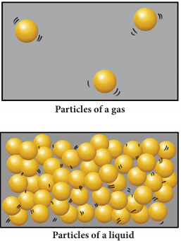
Upon heating a liquid, the particles gain energy and vibrate more vigorously. When the particles possess enough energy, they overcome the strong forces of attraction between one another. The particles break free from one another and move randomly. For example, when liquid water is heated to 100 degree Celsius, it boils to become steam. Boiling occurs when the boiling point is reached. The liquid changes to its gaseous state.
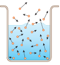
Evaporation
Take a glass of water. All the water molecules are moving here and there at different velocities (shown as arrows of different lengths). Some of the molecules, especially at the surface, could be moving in a direction away from the liquid, and have adequate energy to overcome the attractive force (surface tension) of the liquid, then that molecule will escape into the air. Thus slowly and steadily the water molecules escape, or said to evaporate, and the water level in the glass decreases as the time passes. Note that the temperature of the water did not rise to the level of boiling point of water. Nor were there any bubbles formed like boiling.
Evaporation is the technique used to separate dissolved solids from a solid-liquid mixture. This is the technique used to extract salt from sea water in salt pans. Shallow level of sea water is impounded. Slowly the water evaporates due to action of Sun. Ultimately salt deposits over the ground we can understand. Evaporation makes use of the fact that the solvent in a solution can vapourise at any temperature, leaving behind a residue of the solid that was dissolved in the liquid.
From drying clothes to drying fish, evaporation is used.
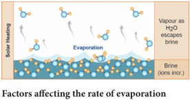
Activity 2
You must be remembering an activity done in Class six, in which we have taken two same shaped glasses and fill them with equal amount of water from same tap. We kept one under the hot sun and other under the shadow. After three to four hours, we saw that there is difference in water levels. The one kept in the hot place witness more evaporation compared to the one in shade. From this we can conclude that higher the temperature, the rate of evaporation will be more. As the temperature increases, more molecules are able to break free from the surface. Thus the rate of evaporation increases with rising temperature.
Activity 3
Take two pans, one wide and another narrow. Fill hot water in both to the same depth. Keep them in open. Observe after one to two hours. The pan that is wide has cooled more than the narrow one. That is more the surface area, the rate of evaporation is more.
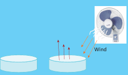
From this, can you guess why we unfurl the clothes while putting them to dry, rather than just drape them over the cloth line?
Greater the surface of conversion of a liquid, more molecules are available for evaporation.
Activity 4
Take sugar solution in a shallow, broad bowl. Place the bowl in hot sun for a few hours. See that the bowl does not get any disturbance for the whole day. You can see that the solvent in the sugar solution evaporates leaving the sugar crystals in the bowl.
Evaporation is a slow process and occurs only at the surface of the liquid.
Water in the freezer compartment of a refrigerator gets cooled and solidifies to form ice. In this case, the liquid water changes into solid water called ice.
Only a change in state (from liquid to solid) takes place during the freezing of water to form ice, but no new substance is formed. So, the freezing of water is a physical change.
Upon cooling a liquid, the particles loose energy and vibrate less vigorously. When the particles possess less energy, they can experience strong forces of attraction between one another. The particles move closer to each other and movement of particles is also restricted. For example, when liquid water is cooled to 0 degree Celsius, it freezes to become ice. Freezing occurs when the freezing point is reached. The liquid changes to its solid state. The arrangement of particles in liquid and solid are diagrammatically represented as follows,
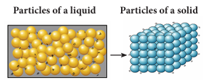
We would have observed that the plate that covers the cooked food items have water droplets inside. Why?
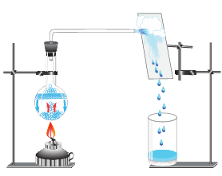
Description for the above image begins, water in a round bottom flask is heated, the flask is closed with one holed rubber cork, through the hole a delivery tube is inserted, another end of the delivery tube is kept on a plate, a beaker is kept below the plate. Upon heating the flask water vapour comes through the delivery tube and hits the plate, condenses and water drops collects in the beaker. Description ends.
The water vapour emerges from the hot food and goes up. The plate covering the food item is in relative less temperature than the hot food. Thus the more energetic molecules loose energy once they touch the cooler plate. As the molecules lose heat, they lose energy and slow down. They move closer to other gas molecules. Finally these molecules collect together to form a liquid. Condensation happens when molecules in a gas cool down.
In class six, you learnt about water cycle in which you already know how the clouds are formed from water vapour. Water vapour condenses to form clouds.
Condensation is the conversion of gas into its liquid state. The liquid obtained after condensation can be converted back into gas on heating. So, condensation is also a physical process. During this process, only the arrangement of molecules changes from the gaseous state to liquid state. So, condensation is a physical change.
Gas on cooling converted to liquid
Liquid on heating converted to Gas.
Condensation is the changing of a gas into its liquid state and it happens by cooling, whereas Evaporation is the changing of a liquid into its gas state and it happens by heating.
We have seen camphor being burnt at home, kept in rooms to prevent entry of mosquitoes. Have you ever noticed camphor becoming liquid at any point of time? It will not.
There are certain solid substances like camphor, naphthalene that get converted into gas directly upon heating without becoming liquid. This process in which a solid is converted directly into gas is called sublimation.
In each of the above said processes, there is a change of state due to change in temperature. But there is no change in chemical composition. By changing the temperature all these changes can be reversed. We know that change of a physical state is only a physical change. So, evaporation, boiling, condensation, melting and freezing are all physical processes.
ACTIVITY 5 Sublimation
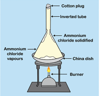
Take some camphor in a porcelain dish and cover it with a clean glass funnel. Close the mouth of the funnel with small amount of cotton wool. Heat the contents in the dish. can you see that camphor changes into vapour state without becoming liquid.
Ammonium chloride is another substance that undergoes sublimation.
Though not mentioned earlier, crystallization is also a special form of physical change. The soluble impurities get removed from certain solids by crystallization. The process of cooling a hot, concentrated solution of a substance to obtain crystals is called crystallization.
We also know that sea water contains salts dissolved in it and the salt can be separated from sea-water by the process of evaporation. The process of evaporation is not a good technique because the soluble impurities do not get removed in the process of evaporation.
ACTIVITY 6 Crystallizing copper sulphate
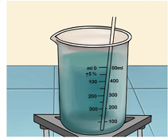
Take about 100 Millie litre of water in a beaker. Heat the water over a burner till it boils. Add impure copper sulphate to the hot water with constant stirring. Continue to add copper sulphate till the solution takes up the added copper sulphate, that is, the added copper sulphate will not dissolve anymore. Filter the contents on a glass plate and allow it to cool. You could see crystals of copper sulphate in a few hours.
Further the crystals of salts obtained by the process of evaporation are small. The shape of crystals cannot be seen clearly. So the solid substances are usually purified by the process of crystallization. Large crystals of pure substances can be obtained from their solutions by the process of crystallization. Crystallization is a method of separation as well as a method of purification.
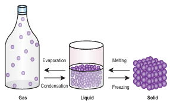
Description for the above image begins, a bottle containing molecules, beaker containing liquid molecules and then solid molecules. Gas upon condensation becomes liquid, liquid upon freezing becomes solid. The solid upon melting becomes liquid, and liquid upon evaporation becomes gas, description ends.
Changes that occur with the formation of new substance with different chemical composition or transformation of a substance into another substance with the evolution or absorption of heat or light energy are termed as chemical changes. Rusting of iron, burning, curdling of milk, reaction of baking soda with lemon juice, fermentation are some examples of chemical changes.
Chemical changes are very important in our lives. All the new substances which we use in various fields of our life are produced as a result of chemical reactions. Some of the examples of the importance of chemical changes are given below,
1, Metals are extracted from their naturally occurring compounds called ‘ores’ by a series of chemical changes.
2, Medicines are prepared by carrying out a chain of chemical changes.
3, The materials such as plastics, soaps, detergents, perfumes, acids, bases, salts etc are all made by carrying out various types of chemical changes.
4, Every new material is discovered by studying different types of chemical changes.
In addition to new products, the following may also accompany a chemical change,
Heat, light or any other radiation may be given off or absorbed.
Sound may be produced
A change in smell may take place (or) a new smell may be given off.
A colour change may take place.
A gas may be formed.
Explosion of a firework is a chemical change. We know that such an explosion produces heat, light, sound and unpleasant gases that pollute the atmosphere. That is why we are advised not to play with fireworks.
Box message, When food gets spoiled, it produces a foul smell. Shall we call this change as a chemical change? Discuss in the class. Give your reflections.
You must have noticed that a slice of an apple acquires a brown colour if it is not consumed immediately. Colour of the potato remains the same when stored in water but there is change in colour with the piece kept in air. Look at the cut brinjal kept in air. The change of colour in these cases is due to the formation of some new substances which you will learn in higher classes. Are these not chemical changes?
Box message, Try yourself
Cut a fresh slice of potato and brinjal and keep it away for some time.
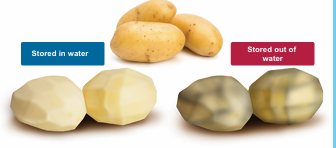
Box message, Discuss and give your answer. You know that plant produce their food by a process called photosynthesis. Can we call photosynthesis a chemical change?
In class six, we have already studied that rusting is an example of a chemical change. Now, shall we read why the process of rusting is called a chemical change.
The Iron Pillar at Delhi. Amazingly there is an iron that did not rust! There is an iron pillar at the Qutub Minar in Delhi which is more than 1600 years age. Even after such a long period, the iron pillar kept in open spaces has not rusted at all. This shows that Indian scientists made great advances in metal making technology even at 16th century which enabled them to make this iron pillar having the quality of great rust resistance.
Rusting is one change that affects iron articles and slowly destroys them. Since iron is used in making bridges, ships, cars, truck bodies and many other articles, the monetary loss due to rusting is huge. The process of forming rust is represented as follows,
iron plus oxygen plus water gives rust.
2 f e. plus 2 O 2 from air plus 2 H 2 O gives 2 f e. 2 O 3 and H 2 O.
For rusting to take place both oxygen and water (or even water vapour) is essential. In fact, if the content of moisture in air is high, the air is said to be more humid and eventually rusting is faster.
How can we prevent rusting?
Iron articles can be prevented from making contact with oxygen, water or water vapour. A simple way is to apply a coat of paint or grease. These coats should be applied regularly to prevent rusting.
Another way of preventing rusting is to deposit a layer of a metal like chromium or zinc on iron. This is called galvanization and you will learn about this detail in higher classes.
we have already studied that burning of paper is a fast change. Burning a piece of paper gives entirely new substances such as carbon-di oxide, water, water vapour, smoke and ash. Heat and light are also given out during the burning of paper. We cannot combine the products of burning of paper to form the original paper again. So, it is a permanent change. Now, shall we perform an activity of burning a piece of magnesium ribbon and find what type of change is it?
What do you observe?
You can see that the magnesium ribbon starts burning with a dazzling white light. Hold the burning magnesium ribbon over a watch glass so that the powdery ash being formed by the burning of magnesium collects in the watch glass.
When magnesium ribbon burns in air, then the magnesium metal combines with the oxygen of air to form a new substance called magnesium oxide.
Magnesium plus Oxygen gives Magnesium oxide
2 m g plus O 2 gives 2 m g O.
Magnesium oxide compound appears as a white powdery ash.
The burning of magnesium ribbon is a chemical change, because a new substance, magnesium oxide, is formed during this change.
ACTIVITY 7
Take a small piece of magnesium ribbon and clean it by rubbing its surface with a sand paper. Hold the magnesium ribbon at one end with a pair of tongs and bring its other end over the flame of a burner.
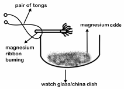
We know that curdling of milk is an example of irreversible change since we cannot get back the milk after curdling occurs. It is also called as a chemical change. Shall we clarify the process of curdling?
Curdling is a process in which liquid gradually turns into solid, forming clumps along the way. Take hot milk in a pan and add few drops of curd, in few minutes milk curdles forming lumpy solid masses. We can even add lemon extract to the hot milk to effect curdling immediately, but the taste and texture of the curd will not be the same as that of the curdling occurring in a few hours. You can try to taste the curd formed by immediate curdling and gradual curdling.
In class six, we saw an example that preparation of batter to produce idly is an example for irreversible change.
Fermentation is the process in which microorganisms such as yeast and certain bacteria break down sugar solution into alcohol and carbon dai oxide.
It is an irreversible process as the alcohol formed cannot be turned back into sugar. Thus, fermentation is a chemical change.
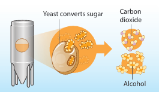
Louis Pasteur (1822 to 1895), a French chemist and microbiologist was the first person to describe the process of fermentation. He described that fermentation occurs in the absence of air and in the presence of micro organisms such as yeast. He discovered the cure for rabies.
Baking soda is sodium hydrogen carbonate and lemon juice contains citric acid. So, when these two substances are mixed together, then a chemical change takes place between sodium hydrogen carbonate and citric acid to form three new substances, sodium citrate, carbon dai oxide and water. The chemical change can be written in the form of a word equation as follows:
Sodium hydrogen carbonate plus citric acid gives sodium citrate plus carbon dai oxide plus water.
ACTIVITY 8
When baking soda and lemon juice are mixed together, then bubbles of carbon dai oxide are formed along with the formation of some salt and water. Take 10 Millie litre of lemon juice and add pinch by pinch of baking soda to it. Actually when we mix baking soda with lemon juice, we will hear a hissing sound when bubbles of carbon dai oxide coming out and rising in the reaction vessel.
We know that firing of crackers is a chemical change. Some crackers explode only when thrown against a wall or struck with a hard substance. Thus, we could see that change in pressure may also bring about a chemical change.
When lemon juice is mixed with soda water, they produce brisk effervescence which is otherwise not possible when they are separate. So we can say that many chemical changes occur only when the substances are made to physically contact with each other.
We have tasted raw rice and cooked rice, Have not we? They are different in their taste. Cooking is a process that is involved in the stated example, wherein rice is boiled with sufficient water. It is the heat and the water that had brought the change in texture and taste of the rice before and after cooking. Thus we can say that heating is a condition needed for a chemical change to occur.
We know the use of vanaspathi in cooking vanaspathi is obtained from vegetable oils by addition of hydrogen to the oils. nickel, platinum or palladium are used as catalyst during the process of hydrogenation of oils.
Catalysts are substances that speed up the process of a chemical change and it will not undergo any change during the course of the reaction. For example, yeast acts as the catalyst in the fermentation of sugar. You will learn more about catalyst in your higher classes.
Water is a chemical compound that remains as water when undisturbed. But if a few drops of an acid is added to water and subjected to electrolysis by passing electric current, it decomposes into hydrogen and oxygen. So, we can understand that electric current is also a condition that is needed for effecting a chemical change.
Thus we can conclude that physical contact of the substances, heat, light, electricity, applying pressure are some of the different conditions needed for chemical changes to occur.
Take some broken pieces of egg shell in a test tube and add lemon juice to it. You could see bubbles of carbon dai oxide evolving in the test tube. This is because of the chemical change between the two. Hence, we can say that evolution of bubbles serve as an indicator that of a chemical change.
When water is added to quicklime (calcium oxide) there will be evolution of lot of heat along with the formation of slaked lime (calcium hydroxide). This is a chemical change and it is indicated by the evolution of heat when the reaction sets in between quicklime and water.
Every day we cook food stuffs and clean the empty cooking utensils. Suppose when we leave the cooked utensils with some cooked food and leave them without washing for a day, we could sense a foul-smell coming from the vessels the next day. This is because the food stuff had become rotten and produces a foul smell. Here spoilage of food is a chemical change and it is indicated by the foul smell. So, change of odour is also an indicator of a chemical change.
When an iron nail is kept in water for a few days and taken out, the nail will become reddish brown in colour indicating that it has rusted. We know that rusting is a chemical change and it is indicated by a change in colour of the iron nail.
We know that hot milk curdles to form white lumps of curd when mixed with lemon juice. A lump of curd is the precipitate that is obtained by the chemical reaction between hot milk and lemon juice. So, formation of precipitate is also an indication of a chemical change.
To conclude, there can be evolution of bubbles, evolution of heat, change of odour, change in colour or formation of a precipitate that serve as indicators for us to understand that a chemical change had taken place.
Just as the physical change, Chemical reaction will be either endothermic or exothermic.
ACTIVITY 9
Ask a student to stretch both hands, put a pinch of soap powder in one hand and a pinch of glucose in the other hand. Add a few drops of water to soap powder and ask how the student feels upon adding water. Now add a few drops of water to the glucose at the other hand. Now ask the student how he /she feels on adding water, What is the feeling when water is added to glucose?
What is the difference when water is added to soap powder and when water is added to glucose?
In this activity, the student reported that he or she felt the warmness in the palm when water is added to soap powder. Right, We saw that the burning of magnesium ribbon gives out heat and light. Similarly, burning of wood also releases heat and light. Such changes in which heat is released are known as exothermic changes.
There are some changes in which heat is absorbed. For example, water absorbs heat when it evaporates to form water vapours. Similarly ice absorbs heat when it melts to form water. Such changes in which heat is absorbed are known as endothermic changes. Dissolution of glucose in water is also an endothermic change.
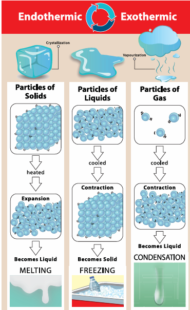
Description for the above image begins,
Picture 1, particles of solids, upon heating expand and becomes liquid known as melting.
Picture 2, particles of liquids, upon cooling contract and becomes solid known as freezing.
Picture 3, particles of gas upon cooling contract and becomes liquid known as condensation. Description ends.
Depending on whether or not a change repeats itself after a definite period of time, it can be classified as periodic change or a non periodic change.
Periodic changes
Changes that repeat themselves after a definite interval of time are called periodic changes.
Rotation and Revolution of earth, beating of the heart, clock striking every hour, motion of the seconds hand or minute hand or hour hand of a clock are some examples of periodic changes.
Every year we observe that seasons changes. We go from rains to winter and winter to summer and so on.
What types of clothes are worn in winter?
What are the clothes that we wear in summer?
If the winter season changes into summer, we observe change in the texture type of clothes we wear. We wear woollen clothes in winter and cotton clothes in summer. Similarly, we observe that the winter season is cool and summer season is hot. In winter, duration of night is longer than in summer. We take cold drinks in summer but prefer hot tea, coffee or milk in winter. These changes that we observe show the change of seasons.
The seasons and changes in weather occur because earth rotates on its fixed axis. Changing seasons are almost periodic in nature.
Non periodic changes
Changes that do not repeat themselves after a definite interval of time and occur randomly are called non-periodic changes. Eruption of a volcano, occurrence of an earthquake, a streak of lighting flash across the sky during a thunderstorm, running of a batsman between the wickets, movement of legs while dancing are a few examples of non periodic changes.
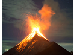
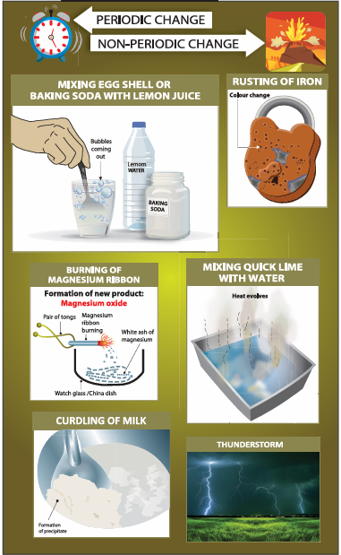
Description for the above picture begins,
Picture 1, mixing egg shell or baking soda with lemon juice.
Picture 2, burning of magnesium ribbon, formation of new product called magnesium oxide,
Picture 3, curdling of milk, formation of precipitate
Picture 4, rusting or iron, example, colour change in a lock
Picture 5, mixing quick lime with water, heat evolves as a result
Picture 6, picture of thunderstorm.
Particle arrangement within the state of matter gets disturbed upon heating. The disturbance is seen either as expansion or contraction.
A process in which liquid changes into vapour on heating is called evaporation.
A process in which solid changes into liquid on heating is called melting or fusion.
A process in which gas changes into a liquid is called condensation.
A process in which liquid changes into solid is called freezing.
Physical changes are the changes in which only physical properties of a substance undergo a change and there is no change in its chemical composition.
Solid substances are usually purified by the process of crystallization.
Evaporation is the technique used to separate dissolved solids from a solid-liquid mixture.
Certain solid substances like camphor, naphthalene get converted into gas directly without becoming liquid upon heating by sublimation.
Changes that occur with the formation of new substance with different chemical composition or transformation of a substance into another substance with the evolution or absorption of heat or light energy are termed as chemical changes.
Changes that repeat themselves after a definite interval of time are called periodic changes.
Changes that do not repeat themselves after a definite interval of time and occur randomly are called non-periodic changes.
Changes in which heat is absorbed are known as endothermic changes.
Changes in which heat is released are known as exothermic changes.
1. When a woollen yarn is knitted to get a sweater, the change can be classified as dash.
a. physical change
b. chemical change
c. endothermic change
d. exothermic change
2. dash of the following are endothermic changes.
a. Condensation and melting
b. Condensation and freezing
c. Evaporation and melting
d. Evaporation and freezing
3. The chemical change is dash
a. water to clouds
b. growth of a tree
c. cow dung to bio gas.
d. ice cream to molten ice cream.
4. dash is an example of a periodic change.
a. Earthquake.
b. Formation of rainbow in sky
c. Occurrence of tides in seas.
d. Showering of rain
5. dash is not a chemical change.
a. Dissolution of ammonia in water
b. Dissolution of carbon dai oxide in water
c. Dissolution of oxygen in water
d. Melting of polar ice caps
1. Filling up a balloon with hot air is a dash change.
2. Stretching gold coin into a ring is a dash change.
3. Opening a gas cylinder knob converts dash fuel into dash fuel. This is an example of dash change.
4. Spoiling of food is a dash change.
5. Respiration is a dash change.
1. Cutting of cloth is an example of a periodic change.
2. Taking a glass of water and freezing it by placing it in the freezer is a chemical change.
3. A bean plant collecting sunlight and turning it into bean seeds is an example of physical and non-periodic change.
4. If the chemical properties of a substance remain unchanged and the appearance or shape of a substance changes it is called a periodic change.
5. Tarnishing of silver is an example of endothermic change.